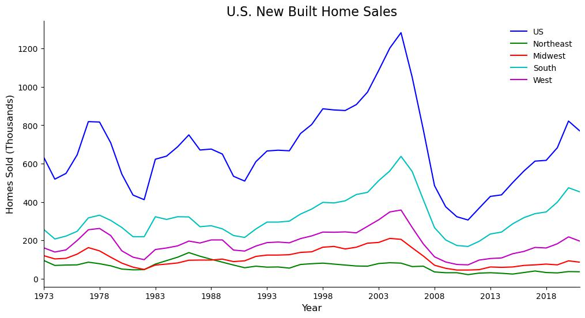

The preprocessing for this data was fairly minimal. I imported the .xls files from the Census Bureau into a notebook, making some minor formatting changes
to make the data suitable to work with. For these preprocessing
steps I used Pandas to import the data and created dataframes to store the various datasets.
I also had to manually create a CSV file that contains each state and its region, which was necessary to associate these fields. Additionally,
I removed Puerto Rico from the state geographic dataset, since it was not included in the Census Bureau data.
With the datasets prepared, the first step of my analysis was to prepare line plots showing each of the three variables, by region, over the entire timespan with
MatPlotLib. This produced the following plots:



These plots immediately reveal some trends, which will be discussed in the results. These plots will be used in their entirety to show overall change,
but I was also cut them to specific time frames to address some questions.
My next step in the analysis was to
add a geographic element to the visualization to be able to better highlight the values and disparities between regions.
To do this I created a generic method to plot any one of the variables for a given year on a map of the United States.
Below is an example of this output, showing the median sale price of homes in each region in 1980: